In the IUPAC system of nomenclature, functional groups are normally designated in one of two ways. The presence of the function may be indicated by a characteristic suffix and a location number. This is common for the carbon-carbon double and triple bonds which have the respective suffixes ene and yne. Halogens, on the other hand, do not have a suffix and are named as substituents, for example: (CH3)2C=CHCHClCH3 is 4-chloro-2-methyl-2-pentene. If you are uncertain about the IUPAC rules for nomenclature you should review them now. Amines are derivatives of ammonia in which one or more of the hydrogens has been replaced by an alkyl or aryl group. The nomenclature of amines is complicated by the fact that several different nomenclature systems exist, and there is no clear preference for one over the others. Furthermore, the terms primary (1º), secondary (2º) & tertiary (3º) are used to classify amines in a completely different manner than they were used for alcohols or alkyl halides. When applied to amines these terms refer to the number of alkyl (or aryl) substituents bonded to the nitrogen atom, whereas in other cases they refer to the nature of an alkyl group. The four compounds shown in the top row of the following diagram are all C4H11N isomers. The first two are classified as 1º-amines, since only one alkyl group is bonded to the nitrogen; however, the alkyl group is primary in the first example and tertiary in the second. The third and fourth compounds in the row are 2º and 3º-amines respectively. A nitrogen bonded to four alkyl groups will necessarily be positively charged, and is called a 4º-ammonium cation. For example, (CH3)4N(+) Br(–) is tetramethylammonium bromide.
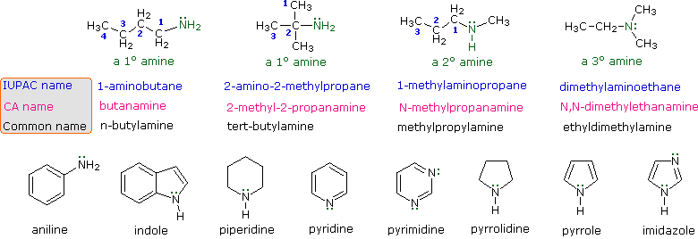
The IUPAC names are listed first and colored blue. This system names amine functions as substituents on the largest alkyl group. The simple -NH2 substituent found in 1º-amines is called an amino group. For 2º and 3º-amines a compound prefix (e.g. dimethylamino in the fourth example) includes the names of all but the root alkyl group. The Chemical Abstract Service has adopted a nomenclature system in which the suffix -amine is attached to the root alkyl name. For 1º-amines such as butanamine (first example) this is analogous to IUPAC alcohol nomenclature (-ol suffix). The additional nitrogen substituents in 2º and 3º-amines are designated by the prefix N- before the group name. These CA names are colored magenta in the diagram. Finally, a common system for simple amines names each alkyl substituent on nitrogen in alphabetical order, followed by the suffix -amine. These are the names given in the last row (colored black). Many aromatic and heterocyclic amines are known by unique common names, the origins of which are often unknown to the chemists that use them frequently. Since these names are not based on a rational system, it is necessary to memorize them. There is a systematic nomenclature of heterocyclic compounds, but it will not be discussed here.
Nature abounds with nitrogen compounds, many of which occur in plants and are referred to as alkaloids. Structural formulas for some representative alkaloids and other nitrogen containing natural products are displayed below, and we can recognize many of the basic structural features listed above in their formulas. Thus, Serotonin and Thiamine are 1º-amines, Coniine is a 2º-amine, Atropine, Morphine and Quinine are 3º-amines, and Muscarine is a 4º-ammonium salt.
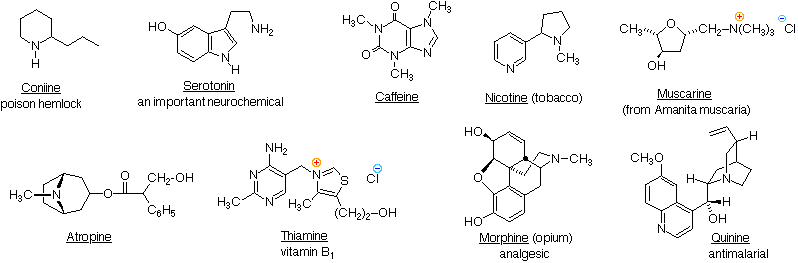
The reader should be able to recognize indole, imidazole, piperidine, pyridine, pyrimidine & pyrrolidine moieties among these structures. These will be identified by pressing the "Show Structures" button under the diagram.
Nitrogen atoms that are part of aromatic rings , such as pyridine, pyrrole & imidazole, have planar configurations (sp2 hybridization), and are not stereogenic centers. Nitrogen atoms bonded to carbonyl groups, as in caffeine, also tend to be planar. In contrast, atropine, coniine, morphine, nicotine and quinine have stereogenic pyramidal nitrogen atoms in their structural formulas (think of the non-bonding electron pair as a fourth substituent on a sp3 hybridized nitrogen). In quinine this nitrogen is restricted to one configuration by the bridged ring system. The other stereogenic nitrogens are free to assume two pyramidal configurations, but these are in rapid equilibrium so that distinct stereoisomers reflecting these sites cannot be easily isolated. It should be noted that structural factors may serve to permit the resolution of pyramidal chiral amines. Two examples of such 3º-amines, compared with similar non-resolvable analogs, are shown in the following diagram. The two nitrogen atoms in Trögers base are the only stereogenic centers in the molecule. Because of the molecule's bridged structure, the nitrogens have the same configuration and cannot undergo inversion. The chloro aziridine can invert, but requires a higher activation energy to do so, compared with larger heterocyclic amines. It has in fact been resolved, and pure enantiomers isolated. An increase in angle strain in the sp2-hybridized planar transition state is responsible for the greater stability of the pyramidal configuration. The rough estimate of angle strain is made using a C-N-C angle of 60º as an arbitrary value for the three-membered heterocycle. To see these features Click on the Diagram.
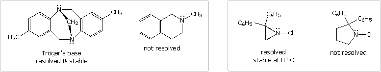
Of course, quaternary ammonium salts, such as that in muscarine, have a tetrahedral configuration that is incapable of inversion. With four different substituents, such a nitrogen would be a stable stereogenic center.
Recall that the molecular formula of a hydrocarbon (CnHm) provides information about the number of rings and/or double bonds that must be present in its structural formula. In the formula shown below a triple bond is counted as two double bonds.
Compound
MolecularFormula
RevisedFormula
CalculatedRings + C=Z
This molecular formula analysis may be extended beyond hydrocarbons by a few simple corrections. These are illustrated by the examples in the table above, taken from the previous list of naturally occurring amines. • The presence of oxygen does not alter the relationship. • All halogens present in the molecular formula must be replaced by hydrogen. • Each nitrogen in the formula must be replaced by a CH moiety.
It is instructive to compare the boiling points and water solubility of amines with those of corresponding alcohols and ethers. The dominant factor here is hydrogen bonding, and the first table below documents the powerful intermolecular attraction that results from -O-H---O- hydrogen bonding in alcohols (light blue columns). Corresponding -N-H---N- hydrogen bonding is weaker, as the lower boiling points of similarly sized amines (light green columns) demonstrate. Alkanes provide reference compounds in which hydrogen bonding is not possible, and the increase in boiling point for equivalent 1º-amines is roughly half the increase observed for equivalent alcohols.
The second table illustrates differences associated with isomeric 1º, 2º & 3º-amines, as well as the influence of chain branching. Since 1º-amines have two hydrogens available for hydrogen bonding, we expect them to have higher boiling points than isomeric 2º-amines, which in turn should boil higher than isomeric 3º-amines (no hydrogen bonding). Indeed, 3º-amines have boiling points similar to equivalent sized ethers; and in all but the smallest compounds, corresponding ethers, 3º-amines and alkanes have similar boiling points. In the examples shown here, it is further demonstrated that chain branching reduces boiling points by 10 to 15 ºC.
The water solubility of 1º and 2º-amines is similar to that of comparable alcohols. As expected, the water solubility of 3º-amines and ethers is also similar. These comparisons, however, are valid only for pure compounds in neutral water. The basicity of amines (next section) allows them to be dissolved in dilute mineral acid solutions, and this property facilitates their separation from neutral compounds such as alcohols and hydrocarbons by partitioning between the phases of non-miscible solvents.
A review of basic acid-base concepts should be helpful to the following discussion. Like ammonia, most amines are Brønsted and Lewis bases, but their base strength can be changed enormously by substituents. It is common to compare basicity's quantitatively by using the pKa's of their conjugate acids rather than their pKb's. Since pKa + pKb = 14, the higher the pKa the stronger the base, in contrast to the usual inverse relationship of pKa with acidity. Most simple alkyl amines have pKa's in the range 9.5 to 11.0, and their water solutions are basic (have a pH of 11 to 12, depending on concentration). The first four compounds in the following table, including ammonia, fall into that category. The last five compounds (colored cells) are significantly weaker bases as a consequence of three factors. The first of these is the hybridization of the nitrogen. In pyridine the nitrogen is sp2 hybridized, and in nitriles (last entry) an sp hybrid nitrogen is part of the triple bond. In each of these compounds (shaded red) the non-bonding electron pair is localized on the nitrogen atom, but increasing s-character brings it closer to the nitrogen nucleus, reducing its tendency to bond to a proton.
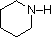
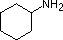
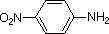
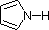
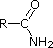
Secondly, aniline and p-nitroaniline (first two green shaded structures) are weaker bases due to delocalization of the nitrogen non-bonding electron pair into the aromatic ring (and the nitro substituent). This is the same delocalization that results in activation of a benzene ring toward electrophilic substitution. The following resonance equations, which are similar to those used to explain the enhanced acidity of ortho and para-nitrophenols illustrate electron pair delocalization in p-nitroaniline. Indeed, aniline is a weaker base than cyclohexyl amine by roughly a million fold, the same factor by which phenol is a stronger acid than cyclohexanol. This electron pair delocalization is accompanied by a degree of rehybridization of the amino nitrogen atom, but the electron pair delocalization is probably the major factor in the reduced basicity of these compounds. A similar electron pair delocalization is responsible for the very low basicity (and nucleophilic reactivity) of amide nitrogen atoms (last green shaded structure). This feature was instrumental in moderating the influence of amine substituents on aromatic ring substitution, and will be discussed further in the section devoted to carboxylic acid derivatives.
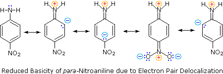
By clicking on the above diagram, the influence of a conjugated amine group on the basicity of an existing amine will be displayed. Although 4-dimethylaminopyridine (DMAP) might appear to be a base similar in strength to pyridine or N,N-dimethylaniline, it is actually more than ten thousand times stronger, thanks to charge delocalization in its conjugate acid. The structure in the gray box shows the locations over which positive charge (colored red) is delocalized in the conjugate acid. This compound is often used as a catalyst for acyl transfer reactions.Finally, the very low basicity of pyrrole (shaded blue) reflects the exceptional delocalization of the nitrogen electron pair associated with its incorporation in an aromatic ring. Indole (pKa = -2) and imidazole (pKa = 7.0), see above, also have similar heterocyclic aromatic rings. Imidazole is over a million times more basic than pyrrole because the sp2 nitrogen that is part of one double bond is structurally similar to pyridine, and has a comparable basicity.
Although resonance delocalization generally reduces the basicity of amines, a dramatic example of the reverse effect is found in the compound guanidine (pKa = 13.6). Here, as shown below, resonance stabilization of the base is small, due to charge separation, while the conjugate acid is stabilized strongly by charge delocalization. Consequently, aqueous solutions of guanidine are nearly as basic as are solutions of sodium hydroxide.
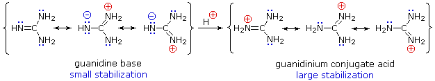
The relationship of amine basicity to the acidity of the corresponding conjugate acids may be summarized in a fashion analogous to that noted earlier for acids.
Strong bases have weak conjugate acids, and weak bases have strong conjugate acids.
We normally think of amines as bases, but it must be remembered that 1º and 2º-amines are also very weak acids (ammonia has a pKa = 34). In this respect it should be noted that pKa is being used as a measure of the acidity of the amine itself rather than its conjugate acid, as in the previous section. For ammonia this is expressed by the following hypothetical equation:
NH3 + H2O ____> NH2(–) + H2O-H(+)
The same factors that decreased the basicity of amines increase their acidity. This is illustrated by the following examples, which are shown in order of increasing acidity. It should be noted that the first four examples have the same order and degree of increased acidity as they exhibited decreased basicity in the previous table. The first compound is a typical 2º-amine, and the three next to it are characterized by varying degrees of nitrogen electron pair delocalization. The last two compounds (shaded blue) show the influence of adjacent sulfonyl and carbonyl groups on N-H acidity. From previous discussion it should be clear that the basicity of these nitrogens is correspondingly reduced.
The acids shown here may be converted to their conjugate bases by reaction with bases derived from weaker acids (stronger bases). Three examples of such reactions are shown below, with the acidic hydrogen colored red in each case. For complete conversion to the conjugate base, as shown, a reagent base roughly a million times stronger is required.
The significance of all these acid-base relationships to practical organic chemistry lies in the need for organic bases of varying strength, as reagents tailored to the requirements of specific reactions. The common base sodium hydroxide is not soluble in many organic solvents, and is therefore not widely used as a reagent in organic reactions. Most base reagents are alkoxide salts, amines or amide salts. Since alcohols are much stronger acids than amines, their conjugate bases are weaker than amide bases, and fill the gap in base strength between amines and amide salts. In the following table, pKa again refers to the conjugate acid of the base drawn above it.
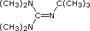
Pyridine is commonly used as an acid scavenger in reactions that produce mineral acid co-products. Its basicity and nucleophilicity may be modified by steric hindrance, as in the case of 2,6-dimethylpyridine (pKa=6.7), or resonance stabilization, as in the case of 4-dimethylaminopyridine (pKa=9.7). Hünig's base is relatively non-nucleophilic (due to steric hindrance), and like DBU is often used as the base in E2 elimination reactions conducted in non-polar solvents. Barton's base is a strong, poorly-nucleophilic, neutral base that serves in cases where electrophilic substitution of DBU or other amine bases is a problem. The alkoxides are stronger bases that are often used in the corresponding alcohol as solvent, or for greater reactivity in DMSO. Finally, the two amide bases see widespread use in generating enolate bases from carbonyl compounds and other weak carbon acids.
Nonionic Superbases An interesting group of neutral, highly basic compounds of nitrogen and phosphorus have been prepared, and are referred to as superbases. To see examples of these compounds Click Here.
Ammonia and many amines are not only bases in the Brønsted sense, they are also nucleophiles that bond to and form products with a variety of electrophiles. A general equation for such electrophilic substitution of nitrogen is:
A list of some electrophiles that are known to react with amines is shown here. In each case the electrophilic atom or site is colored red.
Electrophile
Name
It is instructive to examine these nitrogen substitution reactions, using the common alkyl halide class of electrophiles. Thus, reaction of a primary alkyl bromide with a large excess of ammonia yields the corresponding 1º-amine, presumably by an SN2 mechanism. The hydrogen bromide produced in the reaction combines with some of the excess ammonia, giving ammonium bromide as a by-product. Water does not normally react with 1º-alkyl halides to give alcohols, so the enhanced nucleophilicity of nitrogen relative to oxygen is clearly demonstrated.
It follows that simple amines should also be more nucleophilic than their alcohol or ether equivalents. If, for example, we wish to carry out an SN2 reaction of an alcohol with an alkyl halide to produce an ether (the Williamson synthesis), it is necessary to convert the weakly nucleophilic alcohol to its more nucleophilic conjugate base for the reaction to occur. In contrast, amines react with alkyl halides directly to give N-alkylated products. Since this reaction produces HBr as a co-product, hydrobromide salts of the alkylated amine or unreacted starting amine (in equilibrium) will also be formed.
Unfortunately, the direct alkylation of 1º or 2º-amines to give a more substituted product does not proceed cleanly. If a 1:1 ratio of amine to alkyl halide is used, only 50% of the amine will react because the remaining amine will be tied up as an ammonium halide salt (remember that one equivalent of the strong acid HX is produced). If a 2:1 ratio of amine to alkylating agent is used, as in the above equation, the HX issue is solved, but another problem arises. Both the starting amine and the product amine are nucleophiles. Consequently, once the reaction has started, the product amine competes with the starting material in the later stages of alkylation, and some higher alkylated products are also formed. Even 3º-amines may be alkylated to form quaternary (4º) ammonium salts. When tetraalkyl ammonium salts are desired, as shown in the following example, Hünig's base may be used to scavenge the HI produced in the three SN2 reactions. Steric hindrance prevents this 3º-amine (Hünig's base) from being methylated.
Another electrophilic reagent, benzenesulfonyl chloride, reacts with amines in a fashion that provides a useful test for distinguishing primary, secondary and tertiary amines (the Hinsberg test). As shown in the following equations, 1º and 2º-amines react to give sulfonamide derivatives with loss of HCl, whereas 3º-amines do not give any isolable products other than the starting amine. In the latter case a quaternary "onium" salt may be formed as an intermediate, but this rapidly breaks down in water to liberate the original 3º-amine (lower right equation).
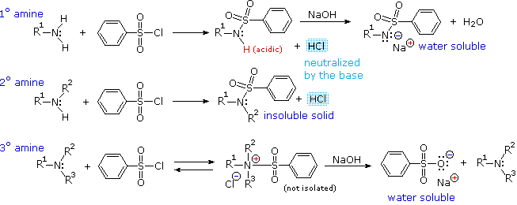
The Hinsberg test is conducted in aqueous base (NaOH or KOH), and the benzenesulfonyl chloride reagent is present as an insoluble oil. Because of the heterogeneous nature of this system, the rate at which the sulfonyl chloride reagent is hydrolyzed to its sulfonate salt in the absence of amines is relatively slow. The amine dissolves in the reagent phase, and immediately reacts (if it is 1º or 2º), with the resulting HCl being neutralized by the base. The sulfonamide derivative from 2º-amines is usually an insoluble solid. However, the sulfonamide derivative from 1º-amines is acidic and dissolves in the aqueous base. Acidification of this solution then precipitates the sulfonamide of the 1º-amine.
Although direct alkylation of ammonia by alkyl halides leads to 1º-amines, alternative procedures are preferred in many cases. These methods require two steps, but they provide pure product, usually in good yield. The general strategy is to first form a carbon-nitrogen bond by reacting a nitrogen nucleophile with a carbon electrophile. The following table lists several general examples of this strategy in the rough order of decreasing nucleophilicity of the nitrogen reagent. In the second step, extraneous nitrogen substituents that may have facilitated this bonding are removed to give the amine product.
Example
NitrogenReactant
CarbonReactant
1st ReactionType
Initial Product
2nd ReactionConditions
2nd ReactionType
Final Product
A specific example of each general class is provided in the diagram below. In the first two, an anionic nitrogen species undergoes an SN2 reaction with a modestly electrophilic alkyl halide reactant. For example #2 an acidic phthalimide derivative of ammonia has been substituted for the sulfonamide analog listed in the table. The principle is the same for the two cases, as will be noted later. Example #3 is similar in nature, but extends the carbon system by a methylene group (CH2). In all three of these methods 3º-alkyl halides cannot be used because the major reaction path is an E2 elimination.
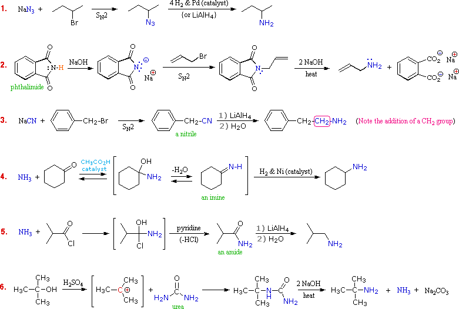
The methods illustrated by examples #4 and #5 proceed by attack of ammonia, or equivalent nitrogen nucleophiles, at the electrophilic carbon of a carbonyl group. A full discussion of carbonyl chemistry is presented later, but for present purposes it is sufficient to recognize that the C=O double bond is polarized so that the carbon atom is electrophilic. Nucleophile addition to aldehydes and ketones is often catalyzed by acids. Acid halides and anhydrides are even more electrophilic, and do not normally require catalysts to react with nucleophiles. The reaction of ammonia with aldehydes or ketones occurs by a reversible addition-elimination pathway to give imines (compounds having a C=N function). These intermediates are not usually isolated, but are reduced as they are formed (i.e. in situ). Acid chlorides react with ammonia to give amides, also by an addition-elimination path, and these are reduced to amines by LiAlH4. The 6th example is a specialized procedure for bonding an amino group to a 3º-alkyl group (none of the previous methods accomplishes this). Since a carbocation is the electrophilic species, rather poorly nucleophilic nitrogen reactants can be used. Urea, the diamide of carbonic acid, fits this requirement nicely. The resulting 3º-alkyl-substituted urea is then hydrolyzed to give the amine. One important method of preparing 1º-amines, especially aryl amines, uses a reverse strategy. Here a strongly electrophilic nitrogen species (NO2(+)) bonds to a nucleophilic carbon compound. This nitration reaction gives a nitro group that can be reduced to a 1º-amine by any of several reduction procedures.
The Hofmann rearrangement of 1º-amides provides an additional synthesis of 1º-amines. To learn about this useful procedure Click Here.
Of the six methods described above, three are suitable for the preparation of 2º and/or 3º-amines. These are: (i) Alkylation of the sulfonamide derivative of a 1º-amine. Gives 2º-amines. (ii) Reduction of alkyl imines and dialkyl iminium salts. Gives 2º & 3º-amines. (iii) Reduction of amide derivatives of 1º & 2º-amines. Gives 2º & 3º-amines.
Examples showing the application of these methods to the preparation of specific amines are shown in the following diagram. The sulfonamide procedure used in the first example is similar in concept to the phthalimide example #2 presented in the previous diagram. In both cases the acidity of the nitrogen reactant (ammonia or amine) is greatly enhanced by conversion to an imide or sulfonamide derivative. The nucleophilic conjugate base of this acidic nitrogen species is then prepared by treatment with sodium or potassium hydroxide, and this undergoes an SN2 reaction with a 1º or 2º-alkyl halide. Finally, the activating group is removed by hydrolysis (phthalimide) or reductive cleavage (sulfonamide) to give the desired amine. The phthalimide method is only useful for preparing 1º-amines, whereas the sulfonamide procedure may be used to make either 1º or 2º-amines.
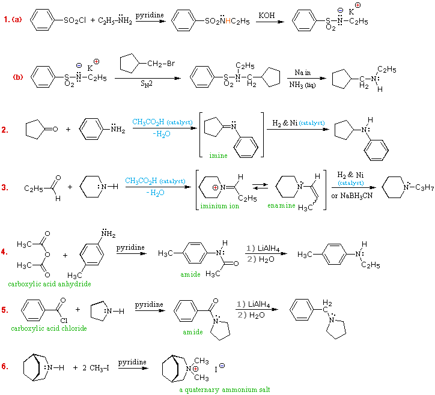
Examples #2 & #3 make use of the carbonyl reductive amination reaction (method #4 in the preceding table. This versatile procedure may be used to prepare all classes of amines (1º, 2º & 3º), as shown here and above. A weak acid catalyst is necessary for imine formation, which takes place by amine addition to the carbonyl group, giving a 1-aminoalcohol intermediate, followed by loss of water. The final reduction of the C=N double bond may be carried out catalytically (Pt & Pd catalysts may be used instead of Ni) or chemically (by NaBH3CN). The imine or enamine intermediates are normally not isolated, but are immediately reduced to the amine product.
To see an animated mechanism for imine formation
Another general method for preparing all classes of amines makes use of amide intermediates, easily made from ammonia or amines by reaction with carboxylic acid chlorides or anhydrides. These stable compounds may be isolated, identified and stored prior to the final reduction. Examples #4 & #5 illustrate applications of this method. As with the previous method, 1º-amines give 2º-amine products, and 2º-amines give 3º-amine products. The last example (#6) shows how 4º-ammonium salts may be prepared by repeated (exhaustive) alkylation of amines.
The Leuckart Reaction A useful variant of the reductive amination method uses formic acid or formate salts as reductants. To see examples of this procedure Click Here.
The following problems review many aspects of amine chemistry. The first three questions concern the nomenclature of amines. The fourth focuses on the relative basicity of small groups of amines. The fifth requires that you choose reagents for accomplishing some multistep transformations. The sixth asks you to draw the product expected from some reaction sequences.
This page is the property of The Edvibe Team. Comments, questions and errors should be sent to contact@edvibe.co.ke. These pages are provided to the IOCD to assist in capacity building in chemical education. 05/05/2013